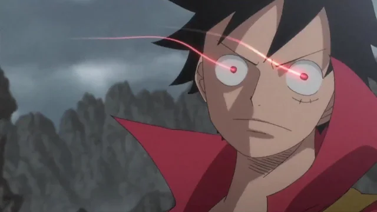
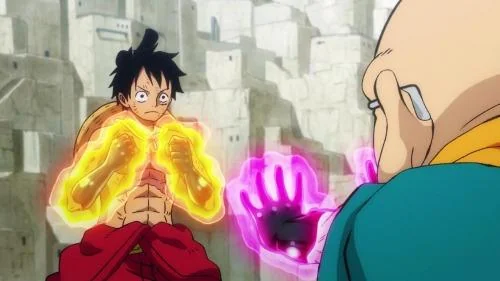
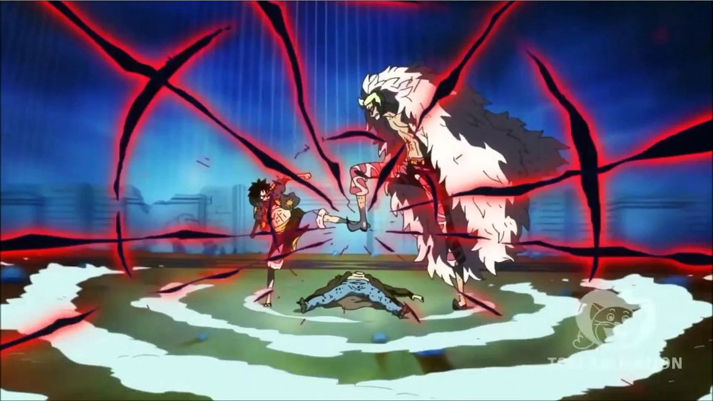

En One Piece, el haki es una fuerza misteriosa, una "ambición" espiritual, que reside en todos los seres vivos. Es una capacidad para sentir y utilizar la energía espiritual, dividida en tres tipos: Kenbunshoku Haki (Percepción), Busoshoku Haki (Armadura) y Haoshoku Haki (Dominio).
El haki de visión, también conocido como haki de observación, es una habilidad en One Piece que permite a sus usuarios percibir el entorno y predecir movimientos, incluso los de seres invisibles o distantes. En esencia, es la capacidad de "ver" más allá de lo que uno ve normalmente.

Podríamos decir que esta forma de usar la energía puede ser defensiva y ofensiva. Pero no es todo, pues otra característica de este tipo de Haki es que permite que las personas puedan tocar y golpear a los usuarios con Frutas del Diablo de tipo Logia.

El haoshoku haki 覇王色の覇気 haō-shoku no haki?, Color de la ambición del conquistador es una forma rara de haki que permite al usuario ejercer su propia fuerza de voluntad sobre los demás. Este tipo de haki no se puede lograr, a través de entrenamiento y sólo uno de cada varios millones de personas nace con esta habilidad.
